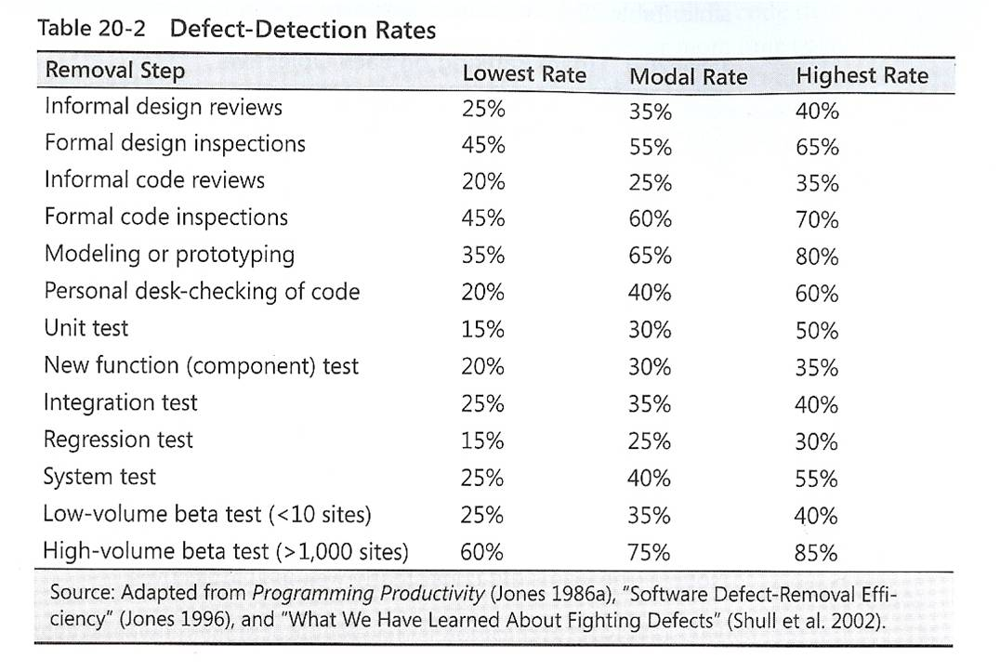

Finding Bugs and Other Software Improvements
Prabhaker Mateti
pmateti@wright.edu CS7140 2013
(Slides collected from many sources)
Comparison of Defect-Detection Approaches

Inspections?
- The combination of design and code inspections usually
removes 70-85 percent or more of the defects in a prod
uct (Jones 1996).
- Designers and coders learn to improve their work throu
gh participating in inspections, and inspections increase
productivity by about 20 percent (Fagan 1976, Humphrey 1989, Gil
b and Graham 1993, Wiegers 2002).
- On a project that uses inspections for design and code,
the inspections will take up about 10-15 percent of proj
ect budget and will typically reduce overall project cost.
Best Results – Combine Approaches
- The typical organization uses a test-heavy defe
ct-removal approach and achieves only about
85 percent defect removal efficiency.
- Leading organizations use a wider variety of te
chniques and achieve defect-removal efficienci
es of 95 percent or higher (Gones 2000).
Code Review Tools
- Advantages of Code Review Tools
- Track suggestions
- Allow follow up on tasks
- Aid in comparing before and after changes
- Source Code repository integration
- Tools [web search to find links]
- Crucible
- CodeCollaborator
- Review Board
- Rietveld
- Code Striker
http://codestriker.sourceforge.net/
FindBugs
- A bug pattern is a code idiom that is often an error.
- Difficult language features
- Misunderstood API methods
- Misunderstood invariants when code is maintaine
- typos, wrong boolean operators, …
- static analysis to inspect Java bytecode for bug patte
rns.
- Without executing the program
- don't even need the program's source
- can report false warnings, and also miss real errors.
- In practice, false warnings < 50%.
FindBugs Categories
- Bad practice
- Correctness
- Dodgy
- Experimental
- Internationalization
- Malicious code vulnerability
- Multithreaded correctness
- Performance
- Security
PMD scans Java source code
- Possible bugs - empty try/catch/finally/switch statements
- Dead code - unused local variables, parameters and privat
e methods
- Suboptimal code - wasteful String/StringBuffer usage
- Overcomplicated expressions - unnecessary if statements,
for loops that could be while loops
- Duplicate code - copied/pasted code means copied/paste
d bugs
PMD RuleSets
-
Android Rules: These rules deal with the Android SDK.
-
Basic Rules: The Basic Ruleset contains a collection of good practices which everyone should follow.
-
Braces Rules: The Braces Ruleset contains a collection of braces rules.
-
Clone Implementation Rules: The Clone Implementation ruleset contains a collection of rules that find questionable usages of the
clone() method.
-
Code Size Rules: The Code Size Ruleset contains a collection of rules that find code size related problems.
-
Controversial Rules: The Controversial Ruleset contains rules that, for whatever reason, are considered controversial.
-
Coupling Rules: These are rules which find instances of high or inappropriate coupling between objects and packages.
PMD RuleSets
-
Design Rules: The Design Ruleset contains a collection of rules that find questionable designs.
-
Import Statement Rules: These rules deal with different problems that can occur with a class' import statements.
-
JavaBean Rules: The JavaBeans Ruleset catches instances of bean rules not being followed.
-
JUnit Rules: These rules deal with different problems that can occur with JUnit tests.
-
Java Logging Rules: The Java Logging ruleset contains a collection of rules that find questionable usages of the logger.
-
Migration Rules: Contains rules about migrating from one JDK version to another.
-
Migration15: Contains rules for migrating to JDK 1.5
PMD RuleSets
-
Naming Rules: The Naming Ruleset contains a collection of rules about names - too long, too short, and so forth.
-
Optimization Rules: These rules deal with different optimizations that generally apply to performance best practices.
-
Strict Exception Rules: These rules provide some strict guidelines about throwing and catching exceptions.
-
String and StringBuffer Rules: Problems that can occur with manipulation of the class String or StringBuffer.
-
Security Code Guidelines: These rules check the security guidelines from Sun.
-
Unused Code Rules: The Unused Code Ruleset contains a collection of rules that find unused code.
PMD Rule Examples
- EmptyCatchBlock: finds instances where an exception is caught,
but nothing is done. Should either be acted on or reported.
- EmptyIfStmt: finds instances where a condition
is checked but nothing is done about it.
- EmptyWhileStmt: finds instances where a while statement does
nothing. If it is a timing loop, then you should use Thread.sleep()
for it; if it's a while loop that does a lot in the exit expression,
rewrite it to make it clearer.
- EmptyTryBlock: Avoid empty try blocks - what's the point?
- EmptyFinallyBlock: Empty finally blocks can be deleted.
- EmptySwitchStatements: Avoid empty switch statements.
- JumbledIncrementer: Avoid jumbled loop incrementers
- ForLoopShouldBeWhileLoop: Some for loops can be more concisely written
as while loops.
CheckStyle
- Development tool to help programmers write Java c
ode that adheres to a coding standard.
- Highly configurable and can be made to support almost any coding
standard. An example configuration file is supplied supporting the
Sun/Oracle Code Conventions. Other sample configuration files are supplied
for other well known conventions.
CheckStyle Example
fig TBD
Dead Code Detector
fig TBD
Miscellaneous Tools
-
CKJM - Chidamber and Kemerer Java Metrics
-
Cobertura & EMMA
Test Code Coverage
-
JavaNCSS - A Source Measurement Suite
-
JDepend - Package Dependencies;
-
Efferent Couplings (Ce) - number of other packages that the classes in
the package depend upon
- PMD-CPD - Copy/Paste Detector (CPD)
- Java2HTML - Source Code turned into a colorized and browseable
HTML representation.
XRadar
- XRadar is an open extensible code report tool c
urrently supporting all Java based systems.
- The batch-processing framework produces HT
ML/SVG reports of the systems current state an
d the development over time - all presented in s
exy tables and graphs.
Sonar
- Dashboard to summarize Static and Dynamic analysis Tools.
- Conventions (Checkstyle)
- Bad Practices (PMD)
- Potential Bugs (FindBugs)
Sonar Application Dashboard
Sonar Violations Drilldown
IntelliJ Idea
-
IDE Features
-
Community Edition
-
Ultimate Edition
-
Code Duplicates
No
Yes
Code Coverage
No
Yes
Code Inspector
Yes
Yes
Spell Checker
Yes
Yes
- More than 600 automated Code Inspections
- Finding probable bugs
- Locating the “dead” code
- Detecting performance issues
- Improving code structure and maintainability
- Conforming to coding guidelines and standards